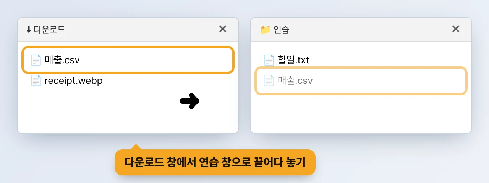
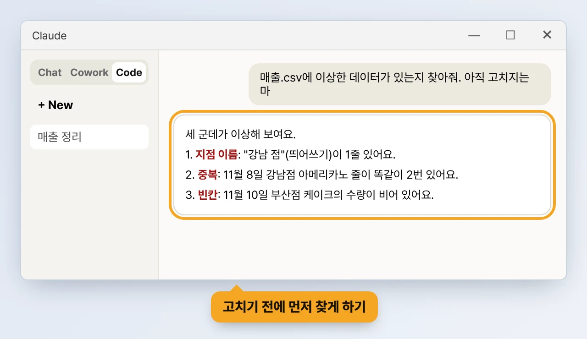
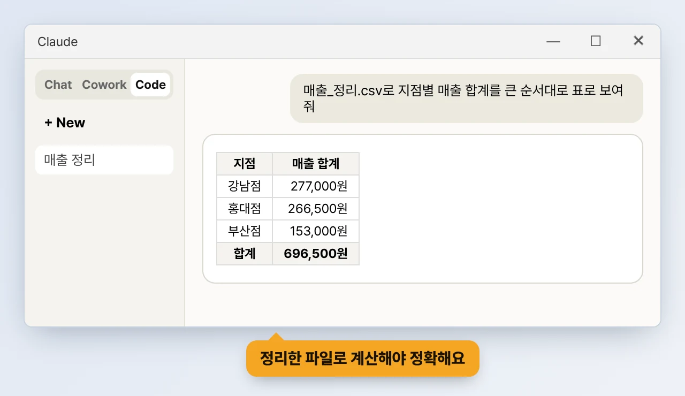
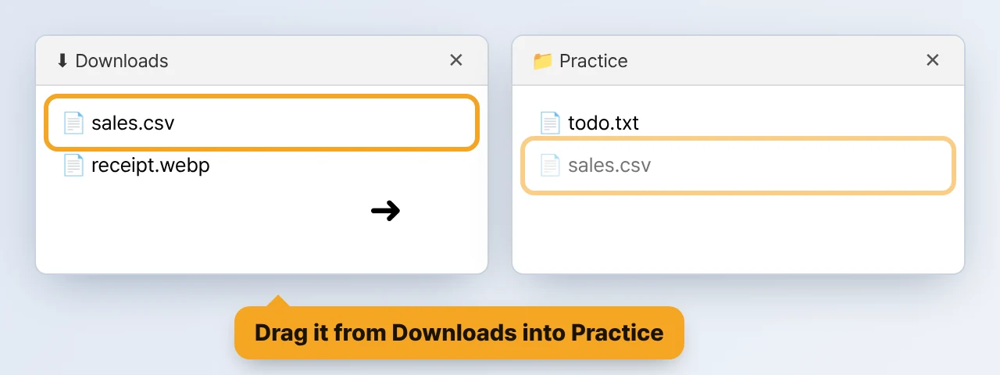
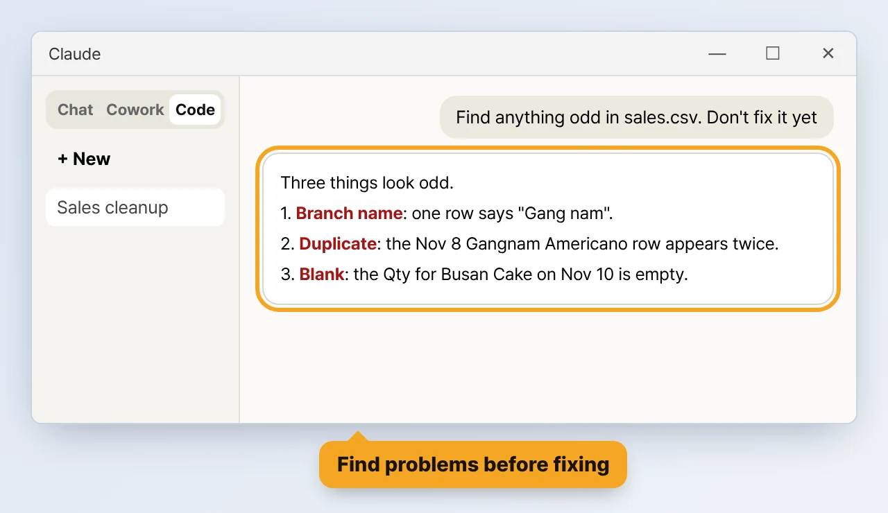
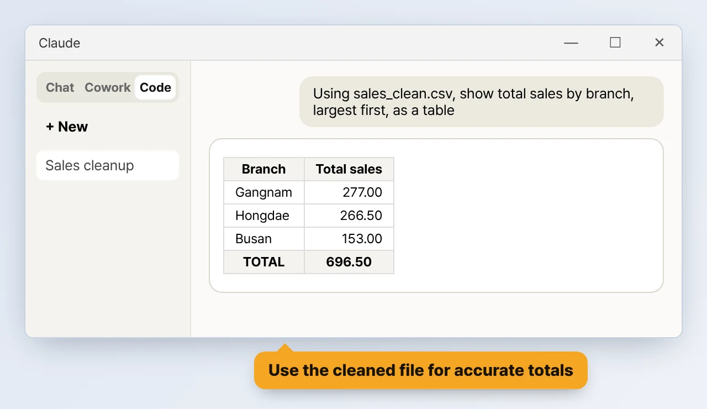

👆 이 내용은 버튼 따라 하는 실습으로도 있어요. 처음이라면 실습으로 직접 해 보고, 이 글은 복습할 때 보세요. 실습 시작하기 →
※ 글 속 그림은 따라 하기 쉽도록 그린 예시입니다. 실제 앱 화면과 모양·글자가 조금 다를 수 있어요.
오늘 새로 배우는 것
여기서부터는 실무 활용이에요. 첫 번째는 엑셀 정리. 지점별 매출 파일에서 이상한 데이터를 찾고, 정리본을 만들고, 합계를 내요.
CSV가 뭔가요? 엑셀 표를 쉼표(,)로 칸을 나눈 글자 파일로 저장한 것이에요. 엑셀로도, 메모장으로도 열려요. Claude가 읽고 고치기 가장 쉬운 표 형식이에요.
1. 예시 매출 파일 준비하기
세 지점(강남점·홍대점·부산점)의 11월 커피 매출 18줄이에요. 일부러 실수 몇 개를 숨겨 두었어요.
Claude는 연습 폴더 안의 파일만 다뤄요. 다운로드 폴더의 매출.csv를 연습 폴더로 끌어다 놓으세요.

2. 어떤 데이터인지 먼저 물어보기
+ New로 새 대화를 열고(Local · 연습 · Manual) 물어보세요.
매출.csv가 어떤 데이터인지 쉽게 설명해줘3. 이상한 데이터 먼저 찾게 하기
매출.csv에 이상한 데이터가 있는지 찾아줘. 아직 고치지는 마
숨겨 둔 문제는 세 가지예요: "강남 점"(띄어쓰기), 11월 8일 강남점 아메리카노 중복, 11월 10일 부산점 케이크 수량 빈칸. 덜 찾았다면 "더 없는지 한 번 더 봐줘".
4. 원본은 두고, 정리본을 새로 만들기
원본은 그대로 두고, 찾은 문제를 고친 파일을 매출_정리.csv로 새로 만들어줘. 빈 수량은 금액÷단가로 채우고, 엑셀에서 한글이 깨지지 않게 저장해줘파일 만들기 허락 카드를 읽고 허용. 원본을 고치는 카드가 나오면 거절하세요.
5. 지점별 합계 내기
매출_정리.csv로 지점별 매출 합계를 큰 순서대로 표로 보여줘
| 지점 | 정답 | 이렇게 나오면 |
|---|---|---|
| 강남점 | 277,000원 | 340,000원이면 중복이 남아 있어요. 251,000원이면 "강남 점"이 안 합쳐졌어요 |
| 홍대점 | 266,500원 | |
| 부산점 | 153,000원 |
이렇게 내가 아는 숫자와 맞춰 보는 것이 실무에서 가장 중요한 습관이에요.
6. 엑셀로 열어 확인하기
매출_정리.csv를 두 번 누르세요. 17줄인지, "강남 점"이 "강남점"이 됐는지, 11월 10일 부산점 케이크 수량이 2인지 보세요. 한글이 깨지면 Claude에게 "엑셀에서 한글이 깨져. UTF-8 BOM으로 다시 저장해줘"라고 하세요.
이런 것도 시켜 보세요
- "품목별로 몇 잔(개) 팔렸는지 표로"
- "날짜순으로 정렬해서 매출_정렬.csv로 저장해줘"
- "지점별로 가장 많이 팔린 품목은?"
오늘 배운 것
- 고치기 전에 먼저 찾게 한다.
- 원본은 두고 새 파일로 정리한다.
- 계산 결과는 아는 숫자와 맞춰 본다.
※ The pictures in this guide are illustrations to make it easy to follow. The real app may look a little different or use different words.
What you'll learn today
From here on it's real work. First up: spreadsheet cleanup. You'll find odd data in a branch sales file, make a clean copy and add up the totals.
What's a CSV? A spreadsheet saved as a text file with commas (,) between the cells. It opens in Excel and in Notepad, and it's the easiest table format for Claude to read and edit.
1. Get the sample sales file
18 rows of November coffee sales from three branches (Gangnam, Hongdae, Busan). A few mistakes are hidden in it on purpose.
⬇ Download the sample sales.csv
Claude only works on files in the Practice folder. Drag sales.csv from Downloads into the Practice folder.

2. First ask what the data is
Open a new chat with + New (Local · Practice · Manual) and ask:
Explain simply what kind of data sales.csv has3. Have it find odd data first
Find anything odd in sales.csv. Don't fix it yet
Three problems are hidden: "Gang nam", a duplicate Nov 8 Gangnam Americano row, and a blank Qty for Busan Cake on Nov 10. If it missed some, say "Look once more for anything else."
4. Keep the original; make a clean copy
Leave the original as is and make a new file, sales_clean.csv, with those problems fixed. Fill the blank Qty with Amount ÷ UnitPrice, and save it so Excel opens it correctlyRead the create-file permission card and click Allow. If a card edits the original, deny it.
5. Add up totals by branch
Using sales_clean.csv, show total sales by branch, largest first, as a table
| Branch | Correct | If you see |
|---|---|---|
| Gangnam | 277.00 | 340.00: the duplicate is still in. 251.00: "Gang nam" wasn't merged |
| Hongdae | 266.50 | |
| Busan | 153.00 |
Checking against numbers you know is the most important habit at work.
6. Open it in Excel to check
Double-click sales_clean.csv. Check it has 17 rows, "Gang nam" became "Gangnam", and the Nov 10 Busan Cake Qty is 2. If the text looks garbled, tell Claude "It looks garbled in Excel. Save it again as UTF-8 with BOM."
Try asking for these too
- "How many of each item were sold, as a table"
- "Sort by date and save as sales_sorted.csv"
- "What's the best-selling item at each branch?"
What you learned today
- Have it find problems before fixing.
- Keep the original and clean up into a new file.
- Check results against numbers you know.